suivant: Transformée en z inverse
monter: Transformée en z et
précédent: Transformée en z et
Table des matières
Index
Transformée en z d'une suite, la fonction ztrans : ztrans
ztrans a un ou trois arguments :
- une suite donnée par son terme général ax : la
variable utilisée pour définir le terme général est x et x sera
aussi le nom de la variable utilisée dans la fonction renvoyée par
,ztrans
- une suite donnée par son terme général an, le
nom de la variable utilisée pour définir ce terme général (ici n) et
le nom de la variable utilisée dans la fonction renvoyée par ztrans
(par exemple z).
ztrans calcule la transformée en z de la suite donnée en argument.
On a par définition :
si
f (x) = ztrans(ax) on a
f (x) = 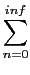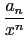
si
f (z) = ztrans(an, n, z) on a
f (z) = 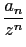
On tape :
ztrans(1)
On obtient :
x/(x-1)
On tape :
ztrans(1,n,z)
On obtient :
z/(z-1)
On a en effet :
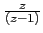 = 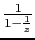 = 1 + + 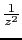 + 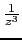 + 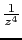 + .. = 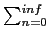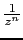
On tape :
ztrans(x)
On obtient :
x/(x^2-2*x+1)
On tape :
ztrans(n,n,z)
On obtient :
z/(z^2-2*z+1)
On a en effet :
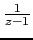 = 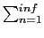
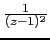 = - (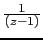)' = 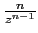
Donc
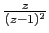 = 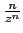
suivant: Transformée en z inverse
monter: Transformée en z et
précédent: Transformée en z et
Table des matières
Index
Documentation de giac écrite par Renée De Graeve